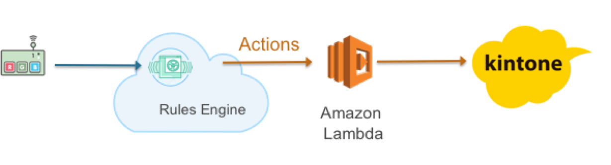

1. イントロダクション¶
1.1. ハンズオンシナリオ¶
シナリオ: センサーデータの送信
Ginga BLEペリフェラルから、IoT GWを通して、AWS IoTのトピックに温度センサーのデータを送信し、AWS IoTでルールに基づきkintoneへの保存を行います。また、しきい値を下回った場合、E-mailでアラートを送信するようにルールを設定します。本ハンズオンにより、センサーからのデータ取得および時系列データの保存、しきい値に対するアクションの手順を確認することができます。
1.2. 利用するデバイス、アプリケーション、サービス¶
GINGA BLE ペリフェラル
- ネビラボ社が提供するBLEセンサーです。本ハンズオンではセンサーからのデータ取得、AWS IoTへのデータ送信に利用します。
http://nebulab.co.jp/products/sensornet.html
ペリフェラルには、温度センサ、湿度センサー、加速度センサーが実装されてます。
kintone開発者ライセンス
ライセンスをお持ちでない方は、30日間無料お試しもしくは開発者ライセンスをお申込みください。 開発者ライセンスは発行に2、3日要しますので、余裕を持ってお申込みください。
AWSアカウント
AWSコマンドラインでiotおよびiot-dataを実行できるようにご利用のPCの設定をお願いします。 インストールの手順はこちらのとおりです。
AWS IoT
- 接続されたデバイスが安全かつ簡単にクラウドアプリケーションやその他のデバイスとやりとりするためのマネージド型プラットフォームです。本ハンズオンではデバイスからのデータ受信、デバイスのリモート制御などで利用します。
- https://aws.amazon.com/jp/iot/
Amazon SNS
Amazon SNSは、モバイルおよびエンタープライズメッセージングの pub-sub サービスで、Mobile Pushやメール、HTTPコールなど複数プロトコルによるメッセージの配信ができます。